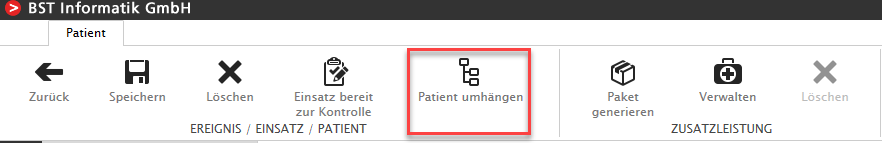

*** What's New in V1.19.x ***
Performance optimiert
Memory und Performance Optimierungen sind durchgeführt worden.
Einsatzerfassung - Erfassungsstatus 'Kontrolliert' zu 'In Bearbeitung' zurücksetzen
In der Einsatzerfassung kann der User ab der Rolle 'Einsatzerfassungskontrolle' den Erfassungsstatus 'Kontrolliert' zu 'In Bearbeitung' zurücksetzen.
Neuer Button 'Kontrolliert zurücksetzen' ist implementiert. Zum Thema Rollen erfahren Sie mehr unter Rollen für MitarbeiterInnen
Einsatzerfassung - Ereignisort Typ 'Autobahn/Tunnel'
Im Ereignisort kann neu beim Typ 'Autobahn/Tunnel' ein Ort mit PLZ ausgewählt werden. Dies erleichtert das Auswerten der Daten z.B. in der 'Ereignisliste mit Region und Hilfsfrist' und den diversen anderen Einsatzlisten.
Einsatzerfassung - Einsatzbericht
Neu kann aus der Einsatzerfassung ein Report mit den wichtigsten Einsatzdaten erstellt, gedruckt und als pdf versendet werden.
Bei mehreren Patienten pro Einsatz wird der Bericht pro Patient ausgegeben.
Einsatzerfassung - Einsatz zu anderem Ereignis umhängen
In der Einsatzerfassung kann neu ein zum falschen Ereignis erfasster Einsatz an das richtige Ereignis umgehängt werden.
Weitere Details siehe Einsatz an Ereignis umhängen
Einsatzerfassung - Patienten von Einsatz zu Einsatz umhängen
In der Einsatzerfassung kann neu ein Patient im selben Ereignis von Einsatz zu Einsatz umgehängt werden.

Weitere Details siehe Patient von Einsatz zu Einsatz umhängen
FlexSelect - Suche für Anzahl Infusionen (Med. Daten) und Telemetrie (Med. Daten)
Neu kann in der Einsatzerfassung nach 'Anzahl Infusionen arteriell erfolgreich', etc. und 'EKG Telemetrie durchgeführt', etc. gesucht werden.
FlexSelect - Suche nach Einsatz mit mehreren Patienten oder keine Patienten
Neu kann in der Einsatzerfassung nach 'Anzahl Patieten (Einsatz)' gesucht werden. Im Wertebereich z.B. 2- eingeben, dann werden Einsätze ab 2 Personen gefiltert.
Wenn die Zahl 0 erfasst wird, erhalten Sie alle Einsätze 'Patient vorhanden = NEIN'. Für die Bejahung dieser Frage, setzen Sie die nicht gleich 0.
Weiters zum Thema 'Leer-Einträge' filtern, siehe Leer-Einträge in ComboBoxen und Leer-Einträge in TextBoxen
FlexSelect - Stammdaten | Mitarbeiter zur Zeit angestellt
In den Stammdaten Mitarbeiter können mit dem Filter 'Gültig' alle am heutigen Tag aktiven MA aufgelistet werden.
Mit der Auswahl 'nicht gleich' werden die nicht mehr beschäftigten Mitarbeiter aufgelistet.
Administration - Rolle 'Einsatzbetrachter'
Mit der neuen Rolle 'Einsatzbetrachter' kann ein Mitarbeiter alle Einsätze im 'Read-only Modus' ansehen. Er kann keine Anpassungen am Einsatz vornehmen.
Weitere Details siehe Rollen für MitarbeiterInnen
Stammdaten - Loginname von MitarbeiterInnen ändern, neuer Button
Neu kann in den Stammdaten | Mitarbeiter das Kurzzeichen einer Mitarbeiterin auf einfache Weise geändert werden.
Komponenten zu Blockleistungen